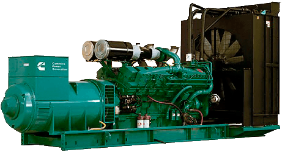

Сервис
Мы занимаемся сервисным обслуживанием и ремонтом Источников Бесперебойного Питания (ИБП), прецизионных кондиционеров и ДГУ
Сервис
Мы занимаемся сервисным обслуживанием и ремонтом Источников Бесперебойного Питания (ИБП), прецизионных кондиционеров и ДГУ
Сервисное обслуживание и ремонт Источников бесперебойного питания: AEG, Socomec, Gamatronic, APC, Jovyatlas, GE, Delta, Effekta, Eaton, Emerson (Vertiv) и многие другие известные брэнды.
Сервисное обслуживание и ремонт прецизионных кондиционеров: Stulz, HiRef, Huawei, Clivet, Emerson ( Vertiv), BlueBox, Climavineta, Liebert Hiross и другие системы прецизионного кондиционирования.

ТО дизель генераторных установок и АВР: RID, Wilson, Aksa
Система диспетчеризации
Управление воротами
Брелок для открывания и закрывания ворот больше не потребуется: управляйте воротами с телефона или планшета и не беспокойтесь о возможной утере или неисправности брелка.
Вы можете удаленно открыть/закрыть ворота (например, для заезда гостей в ваше отсутствие) и проконтролировать результат удаленно, получив изображение с установленной на входе видеокамеры.
Система охраны
Комплексный подход в организации охраны дома поможет защитить вашу территорию от непрошеных гостей. Стандартная система охраны представляет из себя набор датчиков: движения, открытия окон и дверей, разбития стекла. В дополнение к возможностям стандартной системы intraHouse позволяет использовать эти датчики и для других целей: например, при открытии окна кондиционер в помещении отключается, при открытии входной двери в холодное время года включается тепловая завеса.
При срабатывании датчика открытия дверей/окна или разбития стекла сигнал об обнаружении проникновения в охраняемое помещение поступит на центральный пульт охраны, а хозяин получит sms/email уведомление. При этом система отразит тревожное событие в строке состояния интерфейса (с регистрацией всех событий в системном журнале).
Безопасность
Брелок для открывания и закрывания ворот больше не потребуется: управляйте воротами с телефона или планшета и не беспокойтесь о возможной утере или неисправности брелка.
Вы можете удаленно открыть/закрыть ворота (например, для заезда гостей в ваше отсутствие) и проконтролировать результат удаленно, получив изображение с установленной на входе видеокамеры.
Шторы и жалюзи
Автоматизированные шторы, жалюзи и роллеты помогут более эффективно использовать дневной свет и тепло.
При управлении шторами и жалюзи учитывается время суток, время года и даже погода за окном: intraHouse закроет шторы на ночь и заботливо приоткроет их утром для спокойного пробуждения.
Возможный сценарий при постановке дома на сигнализацию: автоматическое закрытие роллет на окнах, снижение температуры, включение вентиляции на минимальную мощность, отправка уведомления при открытии роллет в ваше отсутствие.
Освещение
Управление освещением – наиболее распространенное применение систем автоматизации «Умный дом».
Автоматизированная система освещения может включать в себя осветительные приборы, установленные в доме, на фасаде здания и на территории вокруг дома.
• Удаленное управление освещением с планшета/телефона
• Включение/выключение света по датчикам движения
• Сценарное включение/выключение осветительных приборов (например, для вечеринки, просмотра кино, домашнего спектакля и т.д.)
• Имитация присутствия владельцев дома: включение/выключение света в разных помещениях (возможно участие штор и жалюзи в этом сценарии) для получения необходимого эффекта
Климат-контроль
Достаточно указать комфортную температуру с помощью планшета/телефона/компьютера (дистанционно или на месте), и система intraHouse обеспечит гармоничное и эффективное взаимодействие систем кондиционирования, отопления и вентиляции.
• Автоматическое управление по расписанию и сценариям: например, в дневное время устанавливается более высокая температура, а ночью, для комфортного сна – прохладная
• Возможность подключения метеостанции, которая осуществляет онлайн-контроль влажности и температуры атмосферного воздуха, скорости ветра, типа атмосферных осадков (дождь, снег), яркости солнечного света и т.д. для запуска полезных сценариев системы
• Фиксация показаний датчиков влажности и температуры воздуха для дальнейшего анализа (например, для домашней библиотеки, винного погреба и др.)
• Создание в помещениях зон с разным микроклиматом (в зависимости от разных предпочтений членов вашей семьи, активности использования помещений и других условий)
• Автоматическая защита от одновременной работы радиаторов отопления и системы кондиционирования
• Автоматическая работа системы вентиляции в зависимости от показаний датчиков качества воздуха
 Розетки
Розетки
Миллионы людей, собираясь в спешке, забывают выключить утюг, электроплиту и другую бытовую технику. Имея умный дом intraHouse, нет необходимости возвращаться назад! Вы сможете отключить электропитание розеток одним кликом на планшете/телефоне или предусмотреть сценарий автоматического отключения розеток при постановке дома на сигнализацию.
Управление бассейном
Если на территории вашего участка/дома установлен бассейн, оснащенный необходимым оборудованием, вы можете контролировать состояние воды в нем: уровень качества воды, температуру, закрытие/открытие защитного экрана. Система intraHouse также позволит осуществлять подготовку воды по расписанию или сценарию.
 Полив
Полив
Вы можете самостоятельно создать график полива газона и другой растительности на придомовой территории. Система не забудет регулярно выполнять полив на основании этого графика, учитывая при этом осадки: если идет дождь, полив осуществляться не будет.
Полив можно также активизировать (или отменить) дистанционно, что особенно актуально для удаленных объектов (теплица, сад или огород на дачном участке).
О нас
Наша компания занимается оказанием услуг по ремонту и сервисному обслуживанию
Источников Бесперебойного Питания используемые для подачи «чистого» и
бесперебойного питания, в промышленности, а так же для серверного и сетевого
оборудования.
Сервисное обслуживание это необходимая ежемесячная процедура для систем такого
типа и состоит из следующих видов работ.
• Наружный осмотр с целью выявления нежелательных факторов (необычные шумы, звуки вибрации)
• Проверка степени загрязненности и очистка оборудования
• Проверка поддержки температурных режимов
• Проверка соединений. Подтяжка резьбовых соединений в клемных колодках и на пускозащитной аппаратуре
• Проверка достаточности электрической изоляции
• Проверка работ систем автоматики и их регулировка
• Проверка работы оборудования по нагрузке и токам на подводящих проводниках
• Ревизия аккумуляторных батарей
• Проверка и измерения электролитических конденсаторов АС и DC шины
• Расшифровка журнала событий с сохранением лог. Файла.
Так же наша компания занимается ремонтом и оказанием сервиса систем прецизионного
кондиционирования используемых в Центрах Обработки Данных, а так же в помещениях, где
требуется создать микроклимат с поддержанием температуры и влажности.
Еще одно направление нашей компании это диспетчеризация объектов.
Мы занимаемся программированием микро ПК построенных на платформе linux, устанавливаем в систему программное обеспечение SCADA или умный дом, и привязываем все требующие устройства контроля и управления к ПО.
В итоге мы получаем:
Если это производство то это будет удаленный диспетчерский пульт с базой данных, плюс оповещение e-mail или телеграмм.
Если это частный дом или квартира то это будет удаленный мониторинг и управление оборудованием с ПК либо со смартфона. Так же оповещение e-mail или телеграмм.